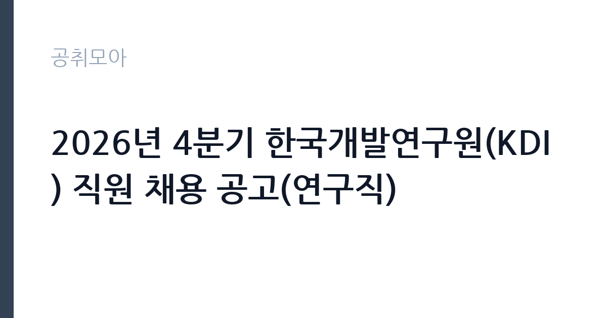

[공공기관] 2026년 4분기 한국개발연구원(KDI) 직원 채용 공고(연구직)
한국개발연구원 · 세종 · 마감 2026-11-10 (D-14) · 출처 나라일터

한눈에 보는 모집 조건
| 기관 | 한국개발연구원 |
|---|---|
| 공고명 | 2026년 4분기 한국개발연구원(KDI) 직원 채용 공고(연구직) |
| 고용형태 | 정규직 |
| 근무지 | 세종 |
| 게시일 | 2026-10-27 |
| 마감일 | 2026-11-10 (D-14) |
지원자격, 이렇게 읽으세요
- 연구원 7명
- 접수 ~2026-11-10 마감
- 세부 조건은 원문 공고문 확인
정규직 채용은 기간의 정함이 없는 근로계약을 전제로 합니다. 수습 기간을 두고 평가한 뒤 정규직으로 확정하는 절차가 일반적이며 기관의 인사 규정과 임금 체계를 적용받습니다. 이번 공고는 한국개발연구원가 직접 진행하는 자체 전형입니다. 연구직은 전공과 학위가 가장 중요한 기준입니다. 석사 이상을 요구하는 공고가 많고, 특정 전공을 명시하는 경우에는 유사 전공 인정 범위를 확인해야 합니다. 관련 분야 연구 경력과 논문 실적을 우대하며 실적은 증빙 자료로 제출해야 합니다. 연구 과제 참여 이력과 데이터 분석 도구 활용 능력도 평가 대상입니다. 채용 조건과 처우는 공고문에 명시되어 있으므로 원문을 확인하십시오. 응시 자격 판단이 애매하면 접수 전에 채용 담당 부서로 문의하는 편이 안전합니다. 응시 자격 판단이 애매하다면 접수 전에 채용 담당 부서로 문의하는 편이 안전합니다. 서류 제출 후에는 소명 기회가 없습니다. 자격증은 유효 기간과 등록 상태를 확인해야 합니다. 갱신이 필요한 자격이라면 갱신 여부를 먼저 점검하십시오.
이 공고의 포인트
이 건은 한국개발연구원가 같은 시기에 낸 2개 모집분야 가운데 연구직 직무입니다. 다른 직무 공고와 요건이 다르므로 지원 전에 모집분야 표를 대조해야 합니다. 이 공고의 첫 번째 포인트는 고용 형태입니다. 수습 기간 평가를 통과하면 기간의 정함이 없는 신분이 되어 고용이 안정됩니다. 두 번째는 업무 범위가 명확하다는 점입니다. 연구직 직무로 채용되므로 배치 이후 담당 업무가 크게 흔들리지 않습니다. 세 번째는 근무지입니다. 세종 지역 근무로 수도권 공고에 비해 지원자 분포가 넓지 않아 상대적으로 경쟁이 분산되는 경우가 있습니다. 자격 요건이 까다롭지 않은 대신 지원자가 몰리는 유형의 공고입니다. 같은 직무로 함께 올라온 공고 4건 가운데 마감이 중간에 위치하므로 다른 공고와 일정이 겹치는지 확인하십시오. 다만 선발 인원이 7명으로 많지 않아 자격을 갖춘 지원자가 몰리면 경쟁률이 높아질 수 있습니다.
전형은 어떻게 진행되나
1차 서류, 2차 면접의 2단계로 진행되는 구성이 일반적입니다. 서류에서는 자격 요건과 경력 증빙을 확인하고, 면접에서는 실제 업무 수행 능력과 조직 적응을 봅니다. 직무에 따라 필기시험이나 실기, 컴퓨터 활용 시험이 추가되기도 하므로 공고문의 전형표를 먼저 확인하십시오. 단계별로 합격자만 다음 전형에 응시할 수 있고, 단계마다 응시 자격 확인 서류를 다시 제출해야 하는 경우가 있습니다. 최종합격자 발표 후에는 신원조회와 채용 신체검사가 남아 있습니다. 동점자 처리 기준이 공고문에 명시되어 있으니 배점 항목을 미리 확인해 두십시오.
원문에서 확인한 전형 방식
2026년 4분기 한국개발연구원(KDI) 직원 채용 공고(연구직) □ 모집분야 및 인원 - 거시·금융정책연구부/연구원 1명(정규직)/경제/석사학위 이상 소지자 또는 취득예정자 - 거시·금융정책연구부/연구원 1명(정규직)/경제·경영/석사학위 이상 소지자 또는 취득예정자 - 규제연구실/연구원 2명(정규직)/경제·경영·정책/학사학위 이상 소지자 - 경제교육·정보센터 여론분석팀/연구원 1명(정규직)/여론조사 및 데이터분석/학사학위 이상 소지자 - 공공투자관리센터/연구원 1명(정규직)/토목·수자원·건축·경제/석사학위 이상 소지자 또는 취득예정자 - 공공투자관리센터/연구원 1명(정규직)/재무·회계/학사학위 이상 소지자 또는 취득예정자로서, 모집분야 관련 전문자격증(KICPA·AICPA 또는 CFA(Level Ⅲ)) 시험 최종합격자 □ 지원서 접수 - 접수기간: 2026.10.27.(화) ~ 11.10.(화) 18:00 (15일간) - 접수방법 : 채용 홈페이지(kdi.recruiter.co.kr)를 통한 온라인 접수 ‣ 한국개발연구원(KDI) 공식홈페이지(www.kdi.re.kr) 접속 → 소통 → 채용 → 해당 공고 선택 → 하단의 ‘지원하기’ 선택 → 지원서 작성
이런 분께 추천해요
- 관련 전공 석사 이상 학위를 가진 분
- 연구 과제 수행과 보고서 작성 경험이 있는 분
- 데이터 분석 도구를 실제로 활용할 수 있는 분
지원 전 체크리스트
- 응시자격 요건과 경력 기준을 충족하는가 — 경력은 증명서로 입증해야 합니다
- 수습 기간과 정규직 전환 조건을 확인했는가
- 제출서류 목록을 모두 준비했는가 — 누락 시 서류 단계에서 탈락합니다
- 접수 마감 2026-11-10 이전에 접수 방식을 확인해 제출했는가
모집 일정과 제출 타이밍
접수 마감은 2026-11-10이고 공고는 2026-10-27에 게시되었습니다. 준비 기간 14일 안에 서류 작성, 증빙 발급, 접수를 모두 마쳐야 하므로 주말을 포함해 일정을 미리 나누는 것이 좋습니다. 특히 경력 기술서나 직무수행계획서를 요구하는 공고는 작성에 시간이 걸리므로 첫날 초안을 잡으십시오. 서류 합격자 발표와 면접 사이 간격이 짧은 경우가 많아 면접 예상 질문은 서류 제출 전에 정리해 두는 편이 유리합니다. 마감 직전에는 접속이 몰리므로 여유를 두고 제출하십시오. 제출 서류는 공고문에 적힌 순서대로 정리하면 담당자가 확인하기 쉬워 누락이 줄어듭니다.
직무 이해하기: 공공기관
연구·교육 지원 기관은 정책 연구와 조사 분석, 교육 프로그램 운영을 담당합니다. 과제 기반으로 인력을 채용하는 경우가 많아 계약 기간과 성과 목표가 명확히 정해집니다. 보고서와 연구 성과물의 품질 기준이 높습니다. 연구직은 정책이나 기술 과제를 설계하고 데이터를 수집·분석해 결과물을 만드는 일을 합니다. 문헌 검토와 조사 설계, 통계 분석, 보고서 작성이 기본 주기이고 과제에 따라 현장 조사나 실험이 붙습니다. 연구 결과를 논문이나 정책 제안으로 정리하고 대외 발표와 학술 교류도 업무에 포함됩니다. 계약 기간이 정해진 과제 기반 채용이 많아 수행 과제와 성과 목표를 입사 초에 확정하는 경우가 일반적입니다. 이 직무는 담당 구역이 정해져 있어 근무지에 따라 실제 업무 환경이 달라집니다. 업무 매뉴얼과 지침이 문서로 정리되어 있어 절차를 익히면 반복 업무는 빠르게 손에 붙습니다. 원문에 '재무·회계/학사학위 이상 소지자 또는 취득예정자로서, 모집분야 관련 전문자격증(KICPA·AICPA 또는 CFA(Level Ⅲ)) 시험 최종합격자 □ 지원서 접수'라는 조건이 명시되어 있습니다.
자기소개서 작성 팁
연구직 지원서는 연구 역량을 구조적으로 보여줘야 합니다. 수행 과제, 사용한 방법론, 도출한 결과와 기여도를 한 문단씩 정리하십시오. 지원 기관의 사업과 본인 연구를 연결하는 부분이 특히 중요합니다. 채용 후 하고 싶은 연구 주제를 구체적으로 제시하면 준비도가 드러납니다. 직무 경험이 많지 않다면 경험의 양보다 과정을 구체적으로 쓰는 편이 낫습니다. 어떤 상황에서 무엇을 판단했고 어떤 결과가 나왔는지 순서대로 서술하면 신뢰가 생깁니다. 지원 동기와 기여 방안은 한 문단씩 짧게 유지하고, 가장 자신 있는 경험에 분량을 몰아주십시오. 마지막 문장은 포부보다 구체적인 실행 계획으로 끝내는 것이 좋습니다.
면접 준비 포인트
면접은 연구 경험과 방법론에 대한 질문이 중심입니다. 본인이 수행한 연구에서 가설을 어떻게 세웠고 어떤 방법으로 검증했는지 구체적으로 답해야 합니다. 연구 결과가 실제 정책이나 사업에 어떻게 쓰일 수 있는지 묻는 질문도 자주 나옵니다. 사용 가능한 분석 도구와 데이터 처리 경험을 명확히 밝히십시오. 직무 특성상 체력이나 근무 시간에 대한 질문이 나올 수 있으므로 솔직하게 답하고 관리 계획을 함께 제시하십시오. 마지막 질문 시간에는 근무 조건에 대한 확인 사항을 한 가지 정도 준비해 가면 성실성이 드러납니다.
급여·근무조건 읽는 법
알리오(공공기관 경영정보 공개시스템) 2025년 결산 경영공시 기준으로 한국개발연구원 일반정규직 1인당 평균보수액은 8,635만원, 공시된 신입사원 초임은 4,995만원입니다. 평균보수액은 기본급에 고정수당·실적수당·성과상여금·급여성 복리후생비를 모두 합산한 값이라 월 기본급만 보고 판단하면 실제와 크게 어긋납니다. 정규직 신입의 경우 공시된 신입사원 초임이 출발점이 되고, 이후 호봉과 성과급에 따라 평균보수에 접근합니다. 연구직의 보수는 채용 신분에 따라 크게 달라집니다. 공공기관 연구직은 기관의 연봉제 또는 직급별 임금표를 적용받고, 계약직 연구원은 계약 기간과 연봉 총액이 개별로 정해집니다. 과제 기반 채용은 인건비 예산 범위에서 연봉이 결정되므로 동일 직급이라도 과제에 따라 차이가 납니다.구체적인 금액과 성과급 조건은 공고문에서 확인하십시오. 2026년 적용 최저임금은 시급 10,320원, 월 환산 2,156,880원(주 40시간·209시간 기준)입니다. 고용노동부 고시 제2025-47호로 확정된 금액입니다. 공고문에 금액이 제시되지 않은 항목은 원문 보수표나 처우 설명에서 확인해야 하며 확인되지 않은 수치는 쓰지 않는 것이 원칙입니다. 비교할 때는 월 급여뿐 아니라 상여·명절휴가비·복지포인트·초과근무수당까지 포함한 연간 총액으로 계산하십시오. 기간제라면 계약 기간 동안의 총액을, 무기계약이라면 호봉 상승과 정년까지의 누적 소득을 기준으로 판단하는 편이 정확합니다.
자주 묻는 질문
- 선발 인원은 몇 명인가요?
공고문 기준 7명입니다. 직종별로 인원이 나뉘는 경우가 있으니 모집분야 항목을 함께 확인하십시오. - 근무지는 어디인가요?
세종 지역의 한국개발연구원 소속 근무지입니다. 세부 주소와 출퇴근 조건은 원문 공고문에서 확인할 수 있습니다. - 보수는 얼마인가요?
채용 신분(정규직)과 기관 임금 규정에 따라 정해지며 구체적인 금액은 공고문 처우 항목에 제시됩니다. 금액이 공개되지 않은 경우에는 원문의 보수표를 확인하십시오.
함께 보면 좋은 공고
[공공기관] 2026년도 제3회 신입직원 공개채용 — 마감 2026-11-18[공공기관] 2026년 독립기념관 하반기 직원 채용공고 — 마감 2026-11-12[공공기관] 한국폴리텍대학 전남캠퍼스 행정지원직(휴직대체) 채용 공고 — 마감 2026-11-04출처: 나라일터 공개정보를 바탕으로 공취모아가 정리한 안내글입니다. 모집 조건·일정은 변경될 수 있으니 지원 전 반드시 원문 공고문을 확인하세요. 본 글은 정보 제공용이며 합격을 보장하지 않습니다.